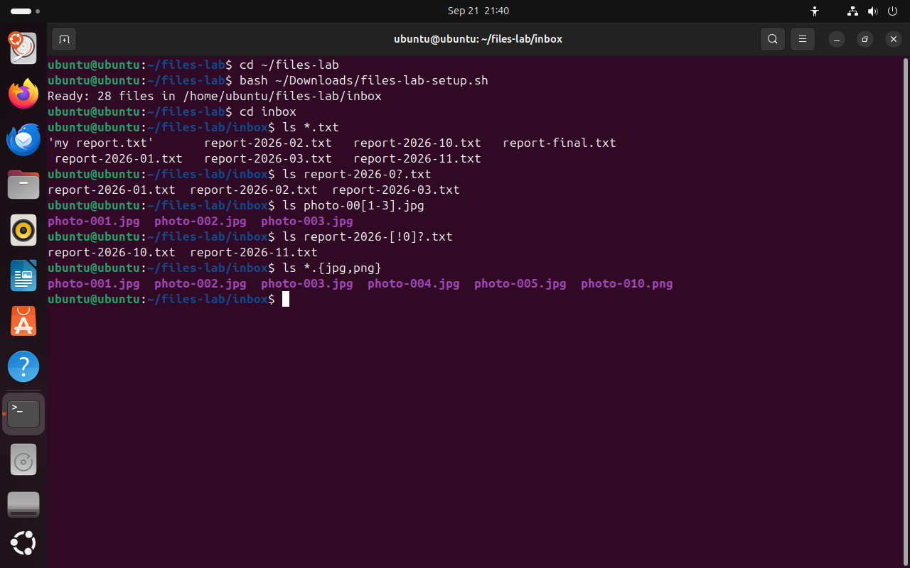
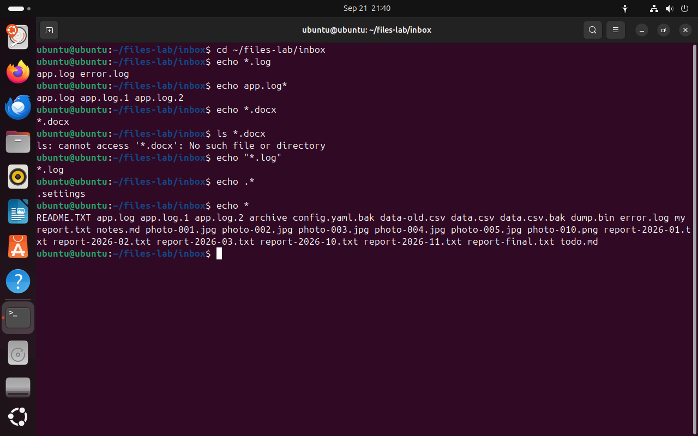
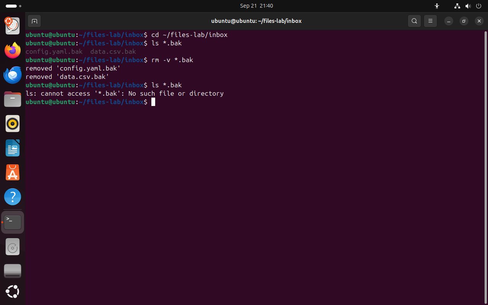

Часть 4 из 7
Маски имён файлов
В этой части разберём символы масок, порядок, в котором оболочка раскрывает маску, и способ проверить маску до удаления файлов.
4.1 Символы масок
В каталоге inbox пять отчётов за разные месяцы, шесть изображений и четыре журнала. Перечислять их по одному долго, а при сотне файлов и вовсе невозможно. Для таких случаев в оболочке есть маски — шаблоны имени со специальными символами.
| Запись | Что означает | Пример из inbox |
|---|---|---|
* | любое число любых символов, в том числе ни одного | *.txt — все имена с окончанием .txt |
? | ровно один любой символ | report-2026-0?.txt — отчёты за 01, 02 и 03 |
[1-3] | один символ из перечисленных или из диапазона | photo-00[1-3].jpg — три первых фотографии |
[!0] | один любой символ, кроме перечисленных | report-2026-[!0]?.txt — отчёты за 10 и 11 |
{jpg,png} | каждый вариант из списка по очереди | *.{jpg,png} — изображения обоих форматов |
Фигурные скобки формально к маскам не относятся. Оболочка сначала превращает *.{jpg,png} в два слова *.jpg и *.png, а затем раскрывает каждое как маску. Этот приём мы применяли на прошлом занятии в команде mkdir -p ~/linux-fhs-lab/{config,data,logs,tmp,screenshots}: там скобки дали пять путей.
Маска похожа на запрос в библиотечном каталоге: «все книги, название которых начинается на „Отчёт“ и заканчивается на „2026“». Библиотекарь находит подходящие карточки и выдаёт читателю готовую стопку книг.
cd ~/files-labчто делает
Что делает команда. Переходит в каталог занятия files-lab из любого места.
По частям:
cd- сменить текущий каталог
~/files-lab- куда перейти (путь от домашнего каталога)
bash ~/Downloads/files-lab-setup.sh# вернуть набор в исходное состояниечто делает
Что делает команда. Выполняет команды скрипта files-lab-setup.sh: создаёт каталог ~/files-lab/inbox с 28 учебными файлами.
По частям:
bash- запустить оболочку bash и выполнить команды из файла
~/Downloads/files-lab-setup.sh- файл скрипта (путь от домашнего каталога)
cd inboxчто делает
Что делает команда. Переходит в каталог inbox, который лежит в текущем каталоге.
По частям:
cd- сменить текущий каталог
inbox- куда перейти
ls *.txt# все .txtчто делает
Что делает команда. Оболочка подставляет все имена, которые заканчиваются на .txt; ls выводит эти файлы.
По частям:
ls- вывести содержимое каталога
*.txt- что показать (маска: * — любые символы; оболочка заменит её именами файлов)
ls report-2026-0?.txt# один символ на месте ?что делает
Что делает команда. Выводит отчёты, у которых после report-2026-0 стоит ровно один символ: 01, 02 и 03.
По частям:
ls- вывести содержимое каталога
report-2026-0?.txt- что показать (маска: ? — один символ; оболочка заменит её именами файлов)
ls photo-00[1-3].jpg# символ из диапазоначто делает
Что делает команда. Выводит фотографии с номерами 001, 002 и 003.
По частям:
ls- вывести содержимое каталога
photo-00[1-3].jpg- что показать (маска: […] — один символ из набора; оболочка заменит её именами файлов)
ls report-2026-[!0]?.txt# первая цифра месяца не 0что делает
Что делает команда. Выводит отчёты, у которых первая цифра месяца не 0: 10 и 11.
По частям:
ls- вывести содержимое каталога
report-2026-[!0]?.txt- что показать (маска: ? — один символ, [!…] — один символ, кроме перечисленных; оболочка заменит её именами файлов)
ls *.{jpg,png}# два окончаниячто делает
Что делает команда. Оболочка превращает запись в две маски, *.jpg и *.png, и подставляет все изображения обоих форматов.
По частям:
ls- вывести содержимое каталога
*.{jpg,png}- что показать (маска: * — любые символы, {…} — оболочка подставит каждый вариант; оболочка заменит её именами файлов)
- 1* — любое число любых символов
- 2? — ровно один символ
- 3[1-3] — один символ из диапазона
- 4[!0] — любой символ, кроме 0
- 5{jpg,png} — оболочка подставляет оба варианта
{kind=link}

Весь снимок ↗Пять масок и файлы, которые под них подошли.
Что показывает снимок. Каждая из пяти масок выбрала свою группу файлов: по окончанию, по одному символу, по диапазону, по исключению и по двум вариантам окончания.
Где это пригодится. Маски позволяют одной командой скопировать все фотографии, перенести журналы за месяц или удалить временные файлы определённого вида.
4.2 Маску раскрывает оболочка
Команды ls, cp и rm масок не обрабатывают. Маску раскрывает оболочка bash. Получив строку, она находит в ней слова со специальными символами, сравнивает их с именами в каталоге и подставляет вместо маски список совпавших имён. Команда запускается уже с готовым списком аргументов.
Результат раскрытия показывает команда echo, которая печатает свои аргументы. echo *.log печатает имена app.log error.log, звёздочки в выводе нет. Эти же аргументы получит любая другая команда с такой маской.
| Случай | Что делает оболочка |
|---|---|
совпадений нет: *.docx | оставляет маску как есть; команда ищет файл с именем *.docx и сообщает, что его нет |
маска в кавычках: "*.log" | не раскрывает маску; команда получает символы *.log |
| имя начинается с точки | * и ? не совпадают с точкой в начале имени; скрытые файлы находит маска, которая сама начинается с точки: .* |
| порядок имён | имена подставляются по алфавиту; заглавные буквы идут раньше строчных |
cd ~/files-lab/inboxчто делает
Что делает команда. Переходит в каталог учебного набора inbox.
По частям:
cd- сменить текущий каталог
~/files-lab/inbox- куда перейти (путь от домашнего каталога)
echo *.log# имена вместо маскичто делает
Что делает команда. Печатает имена, которые оболочка подставила вместо маски *.log.
По частям:
echo- напечатать аргументы
*.log- что напечатать (маска: * — любые символы; оболочка заменит её именами файлов)
echo app.log*что делает
Что делает команда. Печатает имена, которые начинаются с app.log: сам журнал и два его старых файла.
По частям:
echo- напечатать аргументы
app.log*- что напечатать (маска: * — любые символы; оболочка заменит её именами файлов)
echo *.docx# совпадений нетчто делает
Что делает команда. Файлов .docx нет, поэтому оболочка оставляет маску как есть, и echo печатает *.docx.
По частям:
echo- напечатать аргументы
*.docx- что напечатать (маска: * — любые символы; оболочка заменит её именами файлов)
ls *.docxчто делает
Что делает команда. Файлов .docx нет, ls получает имя *.docx и сообщает, что такого файла нет.
По частям:
ls- вывести содержимое каталога
*.docx- что показать (маска: * — любые символы; оболочка заменит её именами файлов)
echo "*.log"# маска в кавычкахчто делает
Что делает команда. Маска в кавычках не раскрывается: echo печатает символы *.log.
По частям:
echo- напечатать аргументы
"*.log"- что напечатать (в кавычках: маску получает сама команда, оболочка её не раскрывает)
echo .*# скрытые файлычто делает
Что делает команда. Печатает скрытые файлы каталога: маска начинается с точки.
По частям:
echo- напечатать аргументы
.*- что напечатать (маска: * — любые символы; оболочка заменит её именами файлов)
echo *# все имена, кроме скрытыхчто делает
Что делает команда. Печатает все имена каталога, кроме скрытых, по алфавиту.
По частям:
echo- напечатать аргументы
*- что напечатать (маска: * — любые символы; оболочка заменит её именами файлов)
- 1оболочка заменила маску именами файлов
- 2совпадений нет: маска передана команде как есть
- 3в кавычках маска не раскрывается
- 4.* находит скрытый файл
- 5список * начинается с README.TXT, скрытого .settings в нём нет
{kind=link}

Весь снимок ↗echo показывает, какие аргументы оболочка передаёт команде.
Что показывает снимок. echo напечатал имена, которые получает команда; маска без совпадений и маска в кавычках остались без изменений; скрытый файл нашла только маска .*.
Где это пригодится. Если команда с маской ведёт себя неожиданно, её аргументы проверяют через echo: сразу видно, что подставила оболочка.
На схеме ниже можно ввести команду с маской и пройти три шага: деление строки на слова, сравнение каждой маски с именами каталога inbox и список аргументов, который получит команда. Имена файлов на схеме совпадают с учебным набором.
4.3 Проверка маски перед удалением
Маску раскрывает оболочка, поэтому одна и та же маска у ls и у rm даёт одинаковый список файлов. На этом основан безопасный порядок удаления по маске: сначала выполнить ls с маской и прочитать список, затем заменить в той же строке ls на rm. Набирать строку заново не нужно: клавиша ↑ возвращает предыдущую команду, сочетание Ctrl+A переводит курсор в начало строки.
cd ~/files-lab/inboxчто делает
Что делает команда. Переходит в каталог учебного набора inbox.
По частям:
cd- сменить текущий каталог
~/files-lab/inbox- куда перейти (путь от домашнего каталога)
ls *.bak# что попадёт под маскучто делает
Что делает команда. Выводит файлы, имена которых заканчиваются на .bak, — проверка маски перед удалением.
По частям:
ls- вывести содержимое каталога
*.bak- что показать (маска: * — любые символы; оболочка заменит её именами файлов)
rm -v *.bak# та же маскачто делает
Что делает команда. Удаляет все файлы с окончанием .bak и печатает каждое удаление.
По частям:
rm- удалить файлы
-v- печатать каждое удаление
*.bak- что удалить (маска: * — любые символы; оболочка заменит её именами файлов)
ls *.bak# проверка результатачто делает
Что делает команда. Выводит файлы, имена которых заканчиваются на .bak, — проверка маски перед удалением.
По частям:
ls- вывести содержимое каталога
*.bak- что показать (маска: * — любые символы; оболочка заменит её именами файлов)
- 1ls показал файлы, подходящие под маску
- 2rm удалил те же два файла
- 3повторная проверка: файлов .bak больше нет
{kind=link}

Весь снимок ↗Сначала ls с маской, затем rm с той же маской.
Что показывает снимок. ls и rm с одной маской обработали одинаковые два файла; повторный ls подтвердил удаление.
Где это пригодится. Этот порядок — сначала ls, потом rm с той же маской — применяют при любой чистке каталога: журналов, временных файлов, старых сборок.
Итоги части 4
*— любые символы,?— один символ,[ ]— один символ из набора,{a,b}— варианты.- Маску раскрывает оболочка до запуска команды;
echoпоказывает результат раскрытия. - Маска без совпадений и маска в кавычках передаются команде без изменений;
*не находит скрытые файлы. - Перед
rmмаску проверяют командойlsс той же маской.
В отчётСнимок пяти масок и снимок echo с маской без совпадений.